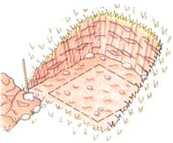

Fridge-Less Living
Can and store food underground by building an outdoor root cellar, including instructions and best bet foods: beans, potatoes, cole crops, fruit, greens and natural refrigeration.
By John Vivian
August/September 1998
BUILDING AND OUTDOOR ROOT CELLAR
4. Soil and sod over roof; add drain pipe Fill floor with gravel.
What our great-grandparents called "common storage"-simple, commonsensical, hand-done, low-or-no-energy ways of putting up home-garden and orchard crops-is far from common any more. Now, most of us are content fed by the Sooper-Dooper and fueled by Exxon.
Who hills soil over rutabagas-or even grows them?-or mulches winter-keeping cabbage under straw for harvest over the winter holidays?
Why bother steaming up the kitchen to make dandelion jelly when the Keebler elves or Mr. Smucker's grandchildren will do it for us?
Hardly anyone remembers how to sun-dry food anymore either. Dried apricots are shipped in from California all bagged in plastic and soaked in sulfur "to retain color," while little electrical food dryers are pitched in TV advertorials to make salt-and-sugar-soaked snacks.
Few of us remember how to put up winter vegetables the old ways anymore either-by air-drying green beans into "leather britches," braiding up garden-cured onions, and packing potatoes in hay and carrots in moist sand down in the root cellar.
MOTHER remembers... remembers both the good old ways of "common," low-energy storage and the crises of weather and worse that made these techniques of hand-powered self-reliance the difference between dearth and plenty, health and illness, in times past.
Following are some of MOTHER'S favorite old-time food preservation methods along with a few more modern techniques that can serve as energy-conserving appropriate technologies for the 21st century when, inevitably, we'll need them more than ever.
PLAN YOUR PLANTINGS
With a little forethought, you can grow for storage. Don't plant just Red or Golden Delicious apple trees to produce juicy, thin-skinned, early-maturing, eating-only apples. For storage fruit, choose one of the newer good-keeping eating varieties such as Fuji, and/or an old-style heirloom winter-keeper with firm, dry flesh such as Red Rome. Rome matures in late October and sports a tough, dark maroon, naturally-waxed hide that demands eaters with strong jaws and all their own teeth but is sure to stay firm in pies and to hold in cold storage till the first rhubarb is ready the following spring.
If planting strawberries, be sure to set in a few rows of one of the new day-neutral varieties that produce dessert-quality berries all season long. But plant the main plot to Sparkle or another reliable June-bearer of tasty firm fruit that will stay whole in a jar of preserves and that come on in wondrous abundance when most welcome in the preserving kitchen: between the rush of planting in spring and harvest in late summer and fall.
Select late-season, winter-keeping varieties but time your planting so that produce will have time to mature completely and comes on at a time and in a sequence that is most convenient for preserving. In other words, plan and plant early enough so that winter squash has plenty of time to harden up naturally, so onion tops can dry and heal in the fall sun, and so that fat full Brussels sprouts can experience one or two light frosts for greatest sweetness. Stagger so you aren't faced with two bushels each of string beans, plum tomatoes, and sweet corn, all on the same August weekend that you'd been promising the kids all summer that you'd take them to the lake.
Our Best-Bet Varieties Beans
By and large, the best vegetables for preserving are slow-growing varieties with a naturally high fiber content. Not that they should be tough and stringy; those characteristics come from bad growing conditions or age. For example, the lovely little French haricots vert, or green beans, are delicious picked and eaten young, but they are too flaccid to preserve well using home methods. By the time they mature long enough to hold up to a canner or drying rack, they are too tough and stringy for good eating.
Most modern bush bean varieties, such as the universally-popular Provider, were specifically developed by commercial plant breeders to be canned or frozen. The pods all come on at the same time for once-over machine harvesting. Better for home preserving are types with a prolonged harvest period that can be picked and preserved in-small batches and in several ways.
As an example here in northern New England, the favorite multi-crop green or snap beans are Blue Lake and Kentucky, pole-types that climb to ten or 12 feet, producing "hands" of four to six pods at every node. Pods make delicious eating from 3" to 6" in length and are good (after stringing, if need be) for slicing or Frenching up to nearly a foot in length. They freeze, can, or dry best at about 4". The rank vines produce over several weeks-months even-and you can pick beans in short lengths for eating and in longer preserving lengths every few days through late summer and early fall. You must harvest every single pod to sustain production; if just one pod is left to mature, the plant thinks it has achieved its goal in life and gives up.
Do leave the last set of pods up at the top of the vine to mature to shell beans; if they are left to dry, you have fine brown-skinned baking beans.
Finally, if uprooted and pulled off their pole supports before they become frost-brittle, the wiry old vines can be stripped of leaves and woven into hammocks, baskets, or wreath foundations. Plus, as beans are legumes with root systems containing nodules full of nitrogen-fixing bacteria, they leave plant food behind in the soil. Let's see: pods fresh or preserved, seeds fresh or dry, vines for crafts, and free fertilizer to boot. How can you lose?
To grow large quantities of dry, winter-keeping beans, plant a variety that has been developed for the purpose, such as Jacob's Cattle or Black Turtle beans. All are hush beans that take about 100 days. Most mature all at once, and can be hand-threshed by beating them inside a feed sack, if you let the pods dry in the field. But monitor them. If you wait till pods are dry enough to split, you'll have to hand-retrieve a lot of beans that drop on the soil during harvest. At five beans a pod, perhaps ten pods per plant, 1,000 dry beans a pound and one plant per foot-row, you need to plant, cultivate, and harvest four 25-foot rows to raise a pound of beans. Recall that Henry Thoreau hand-hoed three acres and seven row-miles of beans to raise 12 bushels that earned him $23.44 before expenses, a little over $8.00 after. That was in 1847, but dry bean prices haven't gone up all that much in the interim. I'm dedicated to individual and community self-reliance, but, along with dentistry and a few other skills, dry-bean-raising is something I'll leave to the pros.
The better seed catalogs indicate in print or with a special symbol which varieties are best for freezing or canning. Some indicate the best for drying as well. By and large, good canning or freezing varieties are good for cold-cellar storage, drying, salting, or pickling as well.
Lacking advice from seedsmen, books, or other gardeners, you are normally best-off selecting the longest-season varieties you can grow to full maturity in your locale. The longer growing season will provide time for the plant to concentrate carbohydrates, to produce strengthening fiber, and to develop the tough skins needed to keep moisture in and damaging rot fungus and bacteria out during prolonged storage.
Potatoes
If you prefer less-than-optimum keepers, compensate in advance by varying your preserving expectations and methods. I usually plant reliable Maine-certified Kennebec potatoes for longest keeping. They are harvested in late-middle fall when the vines die down, let cure in the open air for a week, then brushed off and stored in boxes, packed loosely in dry straw. I overhaul the boxes any time I sense a spoiled spud odor in the cold cellar; if straw is kept loose, any taint gets out quickly. We prefer eating Green Mountains, but they don't keep long, so we eat them first. Simple, huh? This season I'm trying a new variety with anti-potato-bug BT genes built in. If eating it doesn't genetically transmogrify me into a beetle first, I'll check the boxes frequently and keep at least one box till next summer to see how long they keep. Stay tuned please.
Cole Crops
Having learned the hard way how rotten cabbage will taint the house with a stench that infuses all the fabric in clothing, drapes, and furniture, as well as the dog's coat, I keep all cole crops in outside storage.
Large solid heads of good-keeping winter-long storage cabbage are pulled, root and all, in late fall when temps are cool, but well before a hard frost. I strip off the outer leaves and hang the heads upside down inside paper bags from the barn beams. As time goes by, outer leaves will soften and/or show mold spots, and they are stripped off and given to the highly appreciative goats. By spring, any surviving heads will be stripped to half their size and bleached nearly white.
Jade Cross Brussels sprout plants are also pulled, roots and all (but waiting till after two or three good frosts), stripped of leaves, and also hung upside down from the barn beams. We twist them off the stalk as needed. Outer leaves also go to the goats, who quickly learn to read your mind and begin bleating the instant a cole-harvester heads toward the hanging bags. Cabbage, kale, Brussels sprouts, and late cauliflower are all naturally fibrous crops that hold well for fresh-picked use in the early winter-storage garden.
I have always left the kale in place and picked it even after snow becomes so deep that harvesting requires snow-shoes and a snow-digging shovel. Kale especially benefits from frost; it loses its rank wild flavor and argumentative texture and becomes sweet, tender, and mild. It actually keeps nicely in a snow-pack. Protected from sub-zero cold, the leaves remain dark green and edible, so long as they remain hard-frozen till dunked in the cooking pot.
The late-season cauliflower and harvested broccoli stay put as well. Broccoli stops growing, of course, but you can cut already-developed frost-sweetened side sprouts and secondary heads till they are used up. Frosted broccoli-younger leaves and stems too-sweetens and mellows much the way kale does.
Cauliflower is not a long-keeper. The leaves become soft when frosted, but so long as temps remain above hard freeze but cool enough so the heads don't try to flower-and so long as they are covered with mulch-the curds hold well without getting black mold till a hard freeze threatens. Then I pull the plants, remove all the leaves, wrap them in two paper bags, and hang them upside down with a nail through the root in the warmer end of the barn where the animal stalls are. The paper bags are used to keep critter-litter dust off. A passing squeeze will tell you if the produce is still good. The curd-florettes, cut from the root and core, will also keep for a month or more in plastic bags, refrigerated or in a 40°F cold cellar.
For late-season corned beef & cabbage, slaw, and kraut, I plant one of Stokes Seeds' long-term-storage, 100-day-plus hybrids, such as Albion. Since frozen cabbage is sure to rot in inside storage, I pull the best heads for inside cold-storage well before hard frost, as detailed above. But I pile old mulch up around the smaller heads and harvest them for fresh eating from the garden till well after snow falls. The outer-wrapper leaves that are frozen to softness would be discarded anyway, and I think that a little frost sweetens the inner head of a cabbage just as it does kale and broccoli.
Fruit
The fleshy, often sugary seedpods that we call fruit (including tomatoes, peppers, pumpkins, and winter squash) are produced by plants to attract birds and mammals that will eat the fruit and distribute the seeds it contains in their droppings. Fruits are preprogrammed to produce a sequence of enzymes that cause them to swell and mature their seed, then ripen and heighten in color, then soften and decay-at each stage emitting sight clues and odors that attract different creatures to the feast. Preserving fruits against their normal self-destructive tendencies is a challenge.
Pumpkin and winter squash are cur-curbits, a family of tropical vines that includes cucumbers and summer squash, that we consume in the immature stage, well before seeds develop. To keep for six months or longer, pumpkins and winter squash must be grown for that purpose and cured and stored in a moderately warm place with moderate humidity. Most importantly, select a keeping variety that will grow to full maturity in your locale. Don't expect to keep acorn squash for more than a month-if that. Choose reliable Blue Huhbard, Waltham Butternut, or one of the new miniatures, such as Delicata. To keep pumpkin past Halloween, you can roast the pulp and dry-pack it canned, one pie to a pint jar. To dry store, grow an old reliable variety such as Connecticut Field.
For best storage quality, plant as early as you can; let vines grow rampant, but prune each to the two or three best fruit. At an early age, set each fruit up off the ground on a pad of dry hay. Renew the hay once or twice during the season to keep mice or insects from burrowing. When fruit reach harvest stage, the skin won't dent with a thumbnail, and they make a hollow thump. Well before hard frost, harvest by cutting the stem several inches from the fruit. If stem sloughs off, paint the scar with hot paraffin or beeswax to keep it from wicking off moisture.
Then, let fruit cure for up to a month so skins can dry out and harden into a proper-keeping rind. Keep in a sunny yard up on hay pads, on the sunny porch steps, or inside in a warm room. Then, store in single layers at around 60°F and moderate humidity. My grandmother kept hers on hay in wooden orange crates under a porcelain table in a north-side unheated glassed-in porch that backed up to the kitchen stove. She reserved the very best tomatoes, stored them in straw down in the cold cellar, brought them up on November first, started ripening them in a paper bag with an old apple in it, and finished them off on the sunny window-sill. We often had a few precious and much commented-on fresh homegrown tomatoes in the salad for the four-generation family Thanksgiving dinner.
Fruit such as apples or pears can be kept alive and crisp for many months, but only if you keep them away from old or rotten fruit such as the apple my Grandmother used to ripen her Thanksgiving tomatoes. Almost all rose-family and citrus fruit-apples are just the most notorious-emit ethylene gas as they ripen. The stuff is colorless and odorless to us, but a snort of it gives many living plants the urge to move along in life. Commercial produce marketers gas green citrus fruit and tomatoes with ethylene in the truck on the way to market to liven their color; it doesn't do much for flavor in so short a time. Even in small concentrations, ethylene makes stored lettuce want to go to seed and makes potatoes and other root vegetables want to sprout, so many old-timers stored fruit and vegetables separately. In a modern cold cellar with good air circulation and a reasonable amount of diligence, the problem seldom becomes serious.
The key to keeping pears is to pick them when they are fully plump and well on the way to turning from raw green to a more mellow yellow. Let them ripen on the tree and they'll get gritty or rot from the inside out. Store in cool humidity just like apples. Before trying to eat them, let them ripen at cool room temperature till soft and fragrant.
Fresh Greens
Fresh beet or parsnip greens are delicious when young, even when growing from a second-year root. Try growing some in January. In a cool place, keep a good feed of stored roots in a paper bag with an old apple for a week. Before cooking, cut off the stems with a little extra root. Trim beet tops to a poker-chip-sized circle. Plant the eager-to-grow tops in 6" of pure compost under lights, if you have them, in a sunny window if you don't. Keep moist, but not soggy. Expect the leaves to be leggy. They'll make a good side dish in a few weeks, and the price is right.
GROWING
To most gardeners, when a second-year biennial or an annual plant that we eat in its first-year vegetative growth stage bolts and begins going to seed, it is lost. For sure, once a radish or kohlrabi top begins to get spiky, or a lettuce or spinach plant begins pushing a central spear up through its initial rosette of leaves, the once-edible portions become woody and bitter. But if they're allowed to grow and flower, you'll have the easiest-to-preserve edible of all: seeds. Non-hybrid seed can be planted next year; for that, don't eat, but let go the fastest-growing, plumpest radishes, kohlrabi, or lettuce. Seed of less choice individual plants can be saved, dry stored, and used to grow sprouts at home.
Lettuce seed is so tiny, it's hard to keep it from slipping through a harvest net. The sprouts are minuscule as well, but make a spicy garnish. Spinach seed can prove hard to sprout. But radish and kohlrabi seed are right-sized, easy to harvest and to sprout, and their tangy flavor adds zest to sprouting mixtures based on bland alfalfa or clover seed.
A recent health food discovery is that broccoli seed sprouts are edible. We've all heard about the health benefits of broccoli, cauliflower, and other members of the cabbage family. It appears that the anti-cancer and other beneficial properties of the plants are multiplied in their seed.
So, when your Green Comet or Deco broccoli gets ahead of you and erupts with umbrellas of fragrant little yellow blossoms, don't trim them off. Let 'em grow and make seed-which they will, quicker than you can imagine.
Harvest as soon as a little seed falls off in your hand with a gentle tap on the stem; wait a day longer and it may all be lost. Some plants make seed all at once. Easiest is to envelop the seeding spray or whole plant in a plastic garbage bag, pull and overturn the plant (leaving the stem and attached soil outside the bag), and shake. Toss the plant in the compost and winnow the seed by tossing in a shallow basket lined with cheesecloth in a gentle breeze. The leaves and chaff will blow off, leaving your seed crop.
Biennials-especially onions and cabbage-can also be let go to seed their second year. The big seed stem that emerges when a year-old cabbage splits open is something to see. You can reap a good dry quart of spicy little seeds from one cabbage. Only folks with plenty of open land and planting, cultivating, and harvesting equipment can grow alfalfa, clover, and other seeds that make up the bulk of sprouting mixes. I have none of it anymore and am satisfied to purchase mine along with other small grains, dry beans, and dentistry.
I do grow and recommend small plots of oats and storage corns: popcorn, dent corn for grinding into meal, grain sorghums, broomcorn, and old-fashioned open-pollinated sweet corns left to mature and dry on the stalk for parching (heating in a pan coated with a little hot oil for a chewy semi-popped treat).
Heads of oats, sorghum, and broom corn, including their edible and poppable loose grains, are best harvested in plastic bags and winnowed as other seeds. Storage ear-corn can be left in the shuck and on the stalk to dry till the crows find it. Then-quickly-pull ears and let them dry in open-weave baskets in the barn or piled loosely on a warm porch. Over winter, keep dry grain where you store your tropicals, such as pumpkins. Shuck as used. Store bulk grains in metal trash N. Lima, Ohio, is the only source I know for white popping sorghum that produces canes full of juice that can be pressed out and boiled down to make syrup. You can then drive the livestock wild when you give them the pressed but still sweet stalks. The loose round grains in the tassels can be soaked and parched, or popped dry.
As with any preserving technique, always select prime fresh produce. Slice it thin so it will cure quickly. Dry vegetables bone dry. Most fruits can be left chewy; their high concentration of sugars and acids will keep them good.
Always store dried food in airtight containers. Clear jars or plastic bags are best so you can spy any mold. One of those electric vacuum-packers sold on TV and in outdoor-sports catalogs will evacuate pint, quart, and gallon-sized food-quality plastic bags or jars almost completely-removing all the moisture, and mold spores as well. Their price is down to about $25 now. You do have to purchase special bags that are sturdy, washable and reusable several times and can be recycled along with your grocery bags. They are then made into artificial lumber that is a good non-toxic substitute for poison-laced PT timbers. Larger vac-bags that contain a one-way valve and that are evacuated with your vacuum cleaner are useful for storing bulky items such as corn. Available on TV or the As-Sold-On-TV Internet site. (Sorry, fellow TV-phobes, but that's the future, like it or not.)
The easiest dryer is a pair of plastic mesh window screens on sawhorses set out in the sun. Sandwich-thin sliced fruits or veggies between a pair of screens lightly oiled with Canola Oil to prevent sticking. The top screen is to keep off insects-many of which will lay eggs in your eggplant or feed on your figs. Yellowjackets will mob any drying fruit, and if they get a good taste, they'll fight you for it till dusk and be back at dawn.
Set your screens in the sun and let the goods dry till leathery. Bring inside nights, on cool cloudy days, and during rain. Don't stack too many layers of screens one on the other: it's moving dry air that dries the food.
For inside drying, I used to employ a handful of onion bags. Now, short on space, I use a hanging drier that consists of a tier of five-foot-square screens inside a net bag. Hung near the woodstove, it can also be used to sprout warmth-loving seeds. Called the Food Pantry, it is sold by Lehman's and Cumberland Farms. Lehman's also sells old-time tin-pan water-bath dryers to set on the woodstove and dry popcorn and parching corn.
You can also make or purchase several kinds of electrically-powered dryers: boxes or plastic cylinders with stacked net trays or perforated trays inside. Some have fans at the bottom or rear, some just heating elements. Since it first came out in the '70s, my favorite has been Bob & Gen MacManiman's Living Foods Dehydrator, an industrial-sized device that is still available complete, as a full or partial kit, electric or gravity-powered. Made of honest wood, you can set it on top of your wood stove if the iron's cool enough. Plans are included in Gen's great little homemade book Dry It-You’ll Like It (MacManiman Inc., 1997) that has sold over a quarter-million copies.
Ignore the old-timey cookbooks that tell you to just string your beans and broccoli on thread and dry it in the loft. We believed all that and tried it 30 years ago-and discovered that destructive enzymes in the stone-dead plant will begin to digest the flesh, giving it a nasty off flavor before drying has a chance to put a halt to the process.
Treat all vegetables as if you were freezing them. Choose only the freshest; wash, trim, and cut them thin or into small bite-sized pieces that will heat and chill quickly. Set up a steamer or really big pot of boiling water and blanch the produce to kill enzymes, as you would for freezing.
Green beans, for example, need four minutes in live steam or two minutes in boiling water. Drain and plunge into the coldest water you can arrange. A bowl full of ice cubes is best.
Pat dry and string the green beans on thread for a modem version of "leather britches." Tender young beans will dry in a few days. Soak in cold water to reconstitute; the result will have a leathery texture if eaten raw or even after boiling. But they taste more like fresh green beans than canned or even frozen beans. Like many dried foods, "leather britches" are best used as an ingredient in soup or stew-real cold-weather meals.
In the south, cold cellars don't stay cold in the summer and drying was the most common pre-electrification form of food preservation. Below the Mason-Dixon line, "leather britches" were made from semi-mature green snap beans with seeds beginning to develop. Pods were snapped and strings removed before drying. For a meal, they were soaked overnight, drained, and cut up with scissors so the seeds popped free. Then seeds and pod sections were boiled for an hour or more with a chunk of sidemeat (salt pork or bacon) or a ham skin, and a good dollop of sugar and salt, if needed. This is great stuff, especially if the water is allowed to boil off till it starts to pop in the pork grease, and the "mess a' beans" is sprinkled with dried leaves of the old-time cooking spice summer savory. Served with grits and buttermilk, the beans make a fine supper that supplies a full spectrum of nutrients.
Dehydrated potatoes are found in packaged foods, selling for about $100 a pound. You can dry your own. Peel if you must, slice thin (1/8"), and steam-blanch for ten minutes or boil for five minutes-or a little less if they fall apart. I do it an easier way by heating the oven to 325°F and filling the racks with single layers of spuds. Cook for around an hour-till they are not quite soft enough to eat. Cool, slice thin, and let air dry on towels till the upper surface of each slice is dry enough not to glue itself to the screen. Then dry till crisp and bone-dry or they'll mold. Vacuum-pack in plastic pouches.
To prepare other vegetables for drying, follow the blanching times for freezing you'll find in any cookbook. To dry fruit-including squash, peppers, and tomatoes-you needn't blanch anything. Braid or string peppers on thread and hang from the roof on a sunny porch.
If seeds and juice are squeezed out, the rind of any tomato will dry, but only Italian paste-type plum-tomato varieties are worth the bother. Before you try it, buy some sun-dried tomatoes from a grocery and see if you really like them. Dry or packed in olive oil, they are much the same. They can be minced and boiled to death to make a spigot sauce, but are best left to add a chewy texture and rich flavor to stews and pasta sauce, or on pizza or in a pickle-vegetable salad. Another commodity that I'll leave to the pros is making tomato paste.
Grapes can be dried whole into raisins; other fruit should be sliced thin first. Just split and remove stones from apricots and plums. Pears and freestone peaches dry nicely if you get them before they become juicy-ripe, when they'll cement themselves to the screen. Firm fruit, such as pumpkins and storage apples, can be cored and cut in a spiral about ¼" thick by slicing from top to bottom, going around and around. Open the spiral and dry on a string through the center.
We dried bananas and pineapple as well when the kids were little; they concentrate sugars into a natural candy. I hear that you can dry citrus, kiwi fruit, mangos, papayas and the like, if you've got the weather for it.
Fruit leathers are Vitamixed fruit pulps set to dry on plastic or wax paper. Pureed fruit alone or mixes of fruit along with spices and anything else you'd put in a pie (except the thickening) make good leathers.
PICKLING
Pickling is a way of keeping decay organisms from harming cucumbers and many other fresh vegetables and fruits; soaking the produce in a brine of salt, or salt and vinegar (or other acid that's strong enough), kills these organisms. Too much salt in the diet isn't all that good for you and me even though your blood and mine has the same salt content as sea-water, whence we purportedly sprung eons ago, and even though severely salt-reduced diets have recently been shown to be equally harmful to some.
To be good, pickles must be made precisely according to time-tested recipes. In large lots, such as krauting, one must measure by weight. Look in the books for directions.
One all-purpose refrigerator and cold-cellar-pickle brine I will recommend was known to every housewife a century ago, but was first published by wild-food forager Euell Gibbons in the 1970s.
In a sterilized crock, layer sliced cucumbers, cauliflower-ettes, sweet onion rings, sweet pepper rings, carrot slices, split green beans, and thin sections of any other firm fresh vegetable that tastes good raw (no eggplant or tomatoes). If you like, scatter in whole peppercorns and/or mixed pickling spices. Boil to sterilize ¼ cup pickling salt (Kosher, flaked, no-iodine), ¼ cup cider vinegar and eight to ten cups of soft
"Leather britches."
water (minerals will make scum). Cool and pour over the veggies. Weight till submerged with a plate and rock (both scrubbed and boiled as well). Keep small crocks in the fridge, large ones in the cellar, covered with cheesecloth to keep out vinegar flies. Remove any scum that rises. Fish out with clean tongs and enjoy them till they're gone.
SOURCES Books
Root Cellaring by Mike and Nancy Bubel (Garden Way, 1979/1991)
Keeping the Harvest by Nancy Chioffi & Gretchen Mead (Storey, 1991)
Preserving in Today's Kitchen by Jeanne Lesem (Holt, 1992)
Putting Food By by Janet Greene et al. (Penguin, 1973/1991)
Stocking Up by Carol Hupping (Fireside Books, 1990)
Making & Using Dried Foods by Phyllis Hobson. (Storey/Garden Way, 1983/1994)
Seed Catalogs
Burpee 800-888-1447
Johnny's Selected Seeds (207) 437-4301
Peaceful Valley Farm Supply (9l6) 272-4769
Seeds of Change 888-762-7333
Stokes Seeds (716) 695-6980
Vesey's Seeds (902) 368-7333
Homesteader's Supplies
Cumberland General Store (catalog $4.00) 800-334-4640
Lehman's (catalog $3.00) (330) 857-5757
|
 VINCENT BABAK 1. Dig pit in a hillside |
VINCENT BABAK 2. Dig drainage and lay foundation. |
VINCENT BABAK 3. Building log crib. Roll roofing |
|
VINCENT BABAK 3. Building log crib. Roll roofing |
VINCENT BABAK A chamomile rake can be used for harvesting other blossoms and seedpods as well. |
VINCENT BABAK Grinding mill for corn, wheat, seeds, coffee, or anything dry or oily. |
 VINCENT BABAK |
CARDNER |
CARDNER |
|
CARDNER |
CARDNER |
|